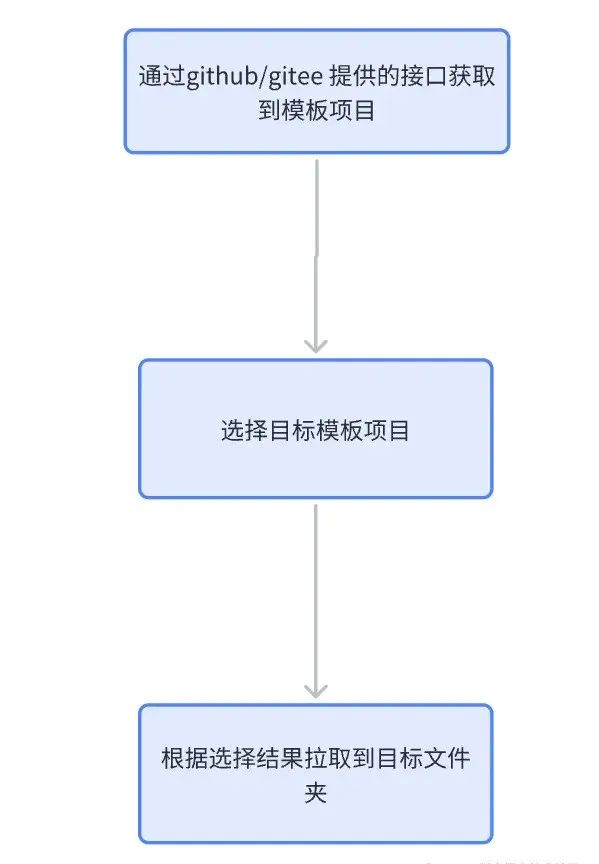
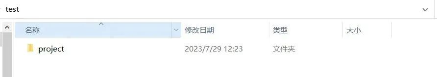
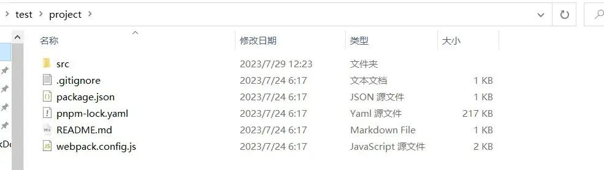
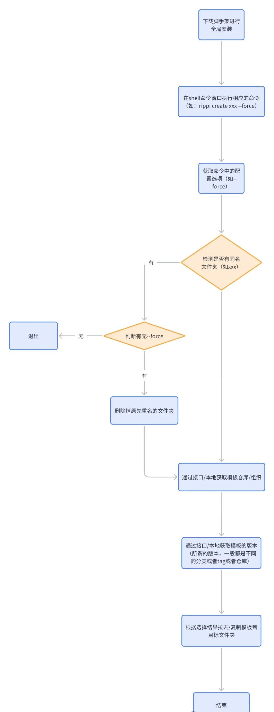

2024-07-13 20:10:27 · YinHao
前提：所使用到的第三方库
先创建一个项目 执行 npm init -y
创建一个 bin 文件夹，添加 index.js 文件，在这个文件中写下#! /usr/bin/env node 此时目录结构如下：
npm link 命令，链接到本地环境中 npm link （只有本地开发需要执行这一步，正常脚手架全局安装无需执行此步骤）Link 相当于将当前本地模块链接到 npm 目录下，这个目录可以直接访问，所以当前包就能直接访问了。默认 package.json 的 name 为基准，也可以通过 bin 配置别名。link 完后，npm 会自动帮忙生成命令，之后可以直接执行 cli xxx。bin/index.js 下配置 create 命令。直接贴代码了，里面涉及到的都是第三方库的 api，不了解的先查下文档较好。ps：以下代码都是 mjs，所以需要在 package.json 中添加一行 "type": "module"
// 1 配置可执行的命令 commander
import { Command } from "commander";
import chalk from "chalk";
import config from "../package.json" assert { type: "json" };
const program = new Command();
program
.command("create <app-name>") // 创建命令
.description("create a new project") // 命令描述
.action((name, options, cmd) => {
console.log("执行 create 命令");
});
program.on("--help", () => {
console.log();
console.log(
`Run ${chalk.cyan("rippi <command> --help")} to show detail of this command`
);
console.log();
});
program
// 说明版本
.version(`rippi-cli@${config.version}`)
// 说明使用方式
.usage("<command [option]");
// 解析用户执行命令传入的参数
program.parse(process.argv);
将上面提到的第三方库都安装一下，然后随便打开一个 cmd，执行 cli create project。
上面的步骤都只是一个脚手架最基本的铺垫，而 create 命令才是最关键的，而这最核心的 create 命令都应该做些什么事情呢？
这里就要聊聊脚手架的本质了，脚手架的本质无非就是我们先在一个仓库里写好一个模板项目，然后脚手架每次运行的时候都把这个模板项目拉到目标项目中，脚手架不过是省去了我们拉代码，初始化项目的操作而已。那么现在，create 命令的基本流程就是这样了。
ps: 如果要使用 gitee 的话，就不能使用 download-git-repo 这个库了，这个库只支持下载 github，要另外找一个支持下载 gitee 的库
// lib/creator.js 编写一个creator类，整个找模板到下载模板的主要逻辑都抽象到了这个类中。
import { fetchRepoList } from "./request.js";
import { loading } from "./utils.js";
import downloadGitRepo from "download-git-repo";
import inquirer from "inquirer";
import chalk from "chalk";
import util from "util";
class Creator {
constructor(projectName, targetDir) {
this.name = projectName;
this.dir = targetDir;
// 将downloadGitRepo转成promise
this.downloadGitRepo = util.promisify(downloadGitRepo);
}
fetchRepo = async () => {
const branches = await loading(
fetchRepoList,
"waiting for fetch resources"
);
return branches;
};
fetchTag = () => {};
download = async (branch) => {
// 1 拼接下载路径 这里放自己的模板仓库url
const requestUrl = `rippi-cli-template/react/#${branch}`;
// 2 把资源下载到某个路径上
await this.downloadGitRepo(requestUrl, this.dir);
console.log(chalk.green("done!"));
};
create = async () => {
// 1 先去拉取当前仓库下的所有分支
const branches = await this.fetchRepo();
// 这里会在shell命令行弹出选择项，选项为choices中的内容
const { curBranch } = await inquirer.prompt([
{
name: "curBranch",
type: "list",
// 提示信息
message: "please choose current version:",
// 选项
choices: branches
.filter((branch) => branch.name !== "main")
.map((branch) => ({
name: branch.name,
value: branch.name,
})),
},
]);
// 2 下载
await this.download(curBranch);
};
}
export default Creator;
// lib/utils.js 给异步方法加loading效果，只是一个好看点的交互效果
import ora from "ora";
export const loading = async (fn, msg, ...args) => {
// 计数器，失败自动重试最大次数为3，超过3次就直接返回失败
let counter = 0;
const run = async () => {
const spinner = ora(msg);
spinner.start();
try {
const result = await fn(...args);
spinner.succeed();
return result;
} catch (error) {
spinner.fail("something go wrong, refetching...");
if (++counter < 3) {
return run();
} else {
return Promise.reject();
}
}
};
return run();
};
// lib/request.js 下载仓库
import axios from "axios";
axios.interceptors.response.use((res) => {
return res.data;
});
// 这里是获取模板仓库的所有分支，url写自己的模板仓库url
export const fetchRepoList = () => {
return axios.get(
"https://api.github.com/repos/rippi-cli-template/react/branches"
);
};
写完上述代码，接下来我们实例化下 creator，然后调用它的 create 方法就好了。
// lib/create.js
import path from "path";
import Creator from "./creator.js";
/**
* 执行create时的处理
* @param {any} name // 创建的项目名
* @param {any} options // 配置项 必须是上面option配置的选项之一，否则就报错 这里取的起始就是cmd里面的options的各个option的long属性
* @param {any} cmd // 执行的命令本身 一个大对象，里面很多属性
*/
const create = async (projectName, options, cmd) => {
// 获取工作目录
const cwd = process.cwd();
// 目标目录也就是要创建的目录
const targetDir = path.join(cwd, projectName);
// 创建项目
const creator = new Creator(projectName, targetDir);
creator.create();
};
export default create;
// bin/index.js 将上文中的action改掉
program
.command("create <app-name>") // 创建命令
.description("create a new project") // 命令描述
.action((name, options, cmd) => {
console.log("执行 create 命令");
});
那么好，完成上述动作，我们来看看效果。
在一个空文件夹中打开 shell 命令行，然后执行 cli create project project 是项目名，随便改。
效果已经出来了，我的这个仓库有两个分支，分别是 react 和 react+ts 的模板分支，这里任意选一个。
选择完毕之后，就会开始下载，看到 done 就说明下载完了。
此时我们的文件夹中多了这么一个文件夹，打开进去看。
就是我们模板仓库里面的那些文件内容。
其实到这里，最基本的一个脚手架就写完了，不过对于尝试了多次的朋友来说会发现一个问题，那就是当当前文件夹中存在相同名称的文件时，文件就直接被覆盖，而很多时候这个行为是不好的，会导致用户丢失不想丢失的内容，为了优化这个体验我们加个 --force 的配置。
优化：增加 --force 配置
force，就当遇到同名文件，直接覆盖继续我们的创建项目的流程。
// bin/index.js 新增一个option
program
.command("create <app-name>") // 创建命令
.description("create a new project") // 命令描述
.option("-f, --force", "overwrite target directory if it is existed") // 命令选项(选项名，描述) 这里就是解决下重名的情况
.action((name, options, cmd) => {
import("../lib/create.js").then(({ default: create }) => {
create(name, options, cmd);
});
});
在 create 方法中，我们接受的第二参数就会包含这个 option。
/ lib/create.js
import path from 'path';
import fs from 'fs-extra';
import inquirer from 'inquirer';
import Creator from './creator.js';
/**
* 执行create时的处理
* @param {any} name // 创建的项目名
* @param {any} options // 配置项 必须是上面option配置的选项之一，否则就报错 这里取的起始就是cmd里面的options的各个option的long属性
* @param {any} cmd // 执行的命令本身 一个大对象，里面很多属性
*/
const create = async (projectName, options, cmd) => {
// 先判断是否重名，如果重名，若选择了force则直接覆盖之前的目录，否则报错
// 获取工作目录
const cwd = process.cwd();
// 目标目录也就是要创建的目录
const targetDir = path.join(cwd, projectName);
if (fs.existsSync(targetDir)) {
// 选择了强制创建，先删除旧的目录，然后创建新的目录
if (options.force) {
await fs.remove(targetDir);
} else {
const { action } = await inquirer.prompt([
{
name: 'action',
type: 'list',
// 提示信息
message: `${projectName} is existed, are you want to overwrite this directory`,
// 选项
choices: [
{ name: 'overwrite', value: true },
{ name: 'cancel', value: false },
],
},
]);
if (!action) {
return;
} else {
console.log('\r\noverwriting...');
await fs.remove(targetDir);
console.log('overwrite done');
}
}
}
// 创建项目
const creator = new Creator(projectName, targetDir);
creator.create();
};
export default create;
整个 create 方法增加多了一个判断是否存在同名文件的情况。
ps：node 其实已经不推荐使用 exists 相关的方法了，但为了好理解这里仍然使用这个方法。node 更推荐的是 access 方法，想了解更多可以查阅 node 官方文档。
增加完这段逻辑之后，我们这个脚手架的完整流程如下：
